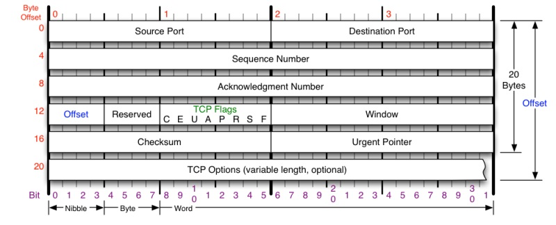
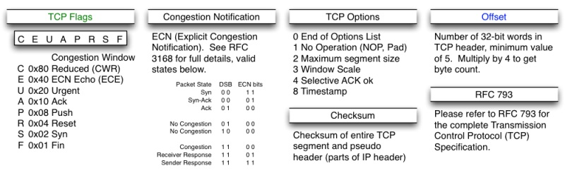
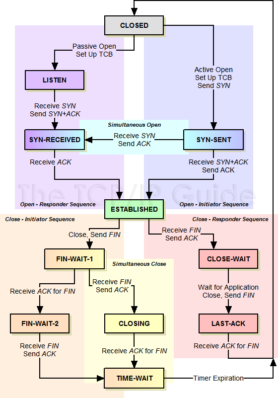
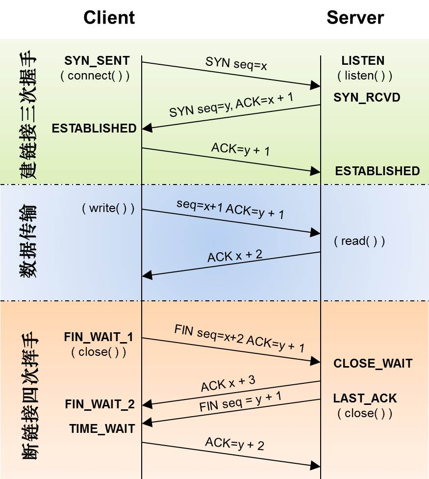
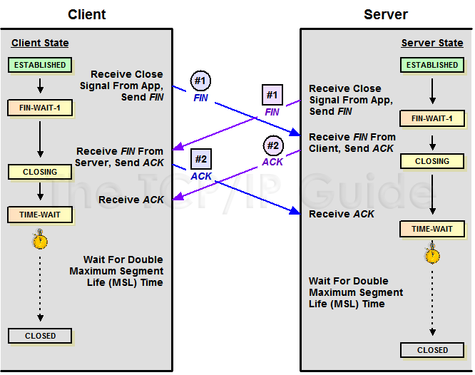
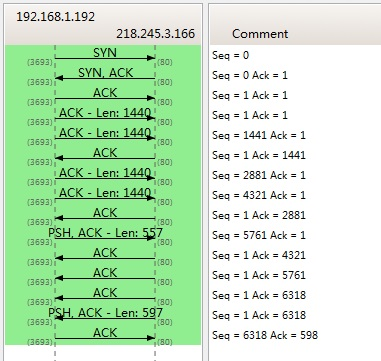
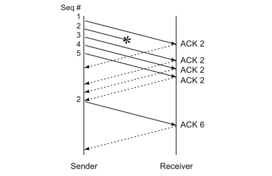
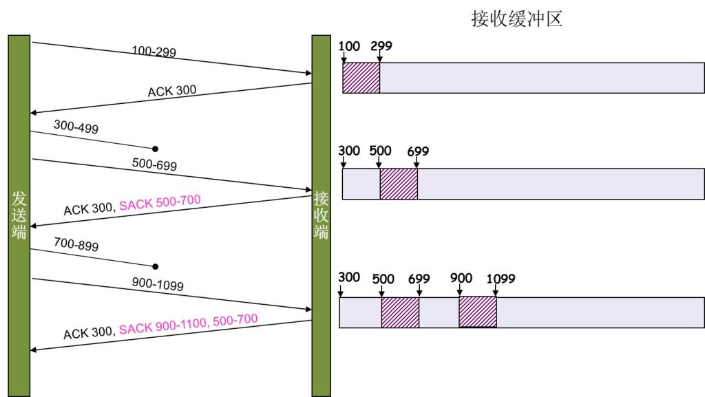

TCP 是一个巨复杂的协议，因为它要解决很多问题，而这些问题又带出了很多子问题和阴暗面。所以学习 TCP 本身是个比较痛苦的过程，但对于学习的过程却能让人有很多收获。关于 TCP 这个协议的细节，我还是推荐你去看 W. Richard Stevens 的《TCP/IP 详解 卷1：协议》（当然，你也可以去读一下 RFC 793 以及后面 N 多的 RFC）。另外，本文我会使用英文术语，这样方便你通过这些英文关键词来查找相关的技术文档。
所以，本文不会面面俱到，只是对 TCP 协议、算法和原理的科普。
我本来只想写一个篇幅的文章的，但是 TCP 真 TMD 的复杂，比 C++ 复杂多了，这 30 多年来，各种优化变种争论和修改。所以，写着写着就发现只有砍成两篇。
废话少说，首先，我们需要知道 TCP 在网络 OSI 的七层模型中的第四层——Transport 层，IP 在第三层——Network 层，ARP 在第二层——Data Link 层。在第二层上的数据，我们叫 Frame，在第三层上的数据叫 Packet，第四层的数据叫 Segment。
首先，我们需要知道，我们程序的数据首先会打到 TCP 的 Segment 中，然后 TCP 的 Segment 会打到 IP 的 Packet 中，然后再打到以太网 Ethernet 的 Frame 中。传到对端后，各个层解析自己的协议，然后把数据交给更高层的协议处理。
TCP 头格式
接下来，我们来看一下 TCP 头的格式：

你需要注意这么几点：
- TCP 的包是没有 IP 地址的，那是 IP 层上的事情，但是有端口号——Source Port 和 Destination Port
- Sequence Number 是包的序号，用来解决网络包乱序（reordering）问题
- Acknowledgement Number 就是 ACK——用于确认收到，用来解决不丢包的问题
- Window 又叫 Advertised-Window，也就是著名的滑动窗口（Sliding Window），用于解决流控
- TCP Flag 是包的类型，主要用于操控 TCP 的状态机
关于其它的东西，可以参看下面的图示：

- Checksum（校验和）：覆盖整个 TCP 报文段和伪首部，用于检测传输过程中的差错
- Offset：头部以 32 位字（4 字节）为单位计数，数值乘以 4 才是首部的实际字节长度，也就是上面说的“数据偏移”
- TCP Flags：每个标志位都有对应的十六进制值——CWR 0x80、ECE 0x40、URG 0x20、ACK 0x10、PSH 0x08、RST 0x04、SYN 0x02、FIN 0x01
- Congestion Notification：ECN 拥塞通知的编码规则（Packet State 与 ECN bits 的组合），配合上面说的 CWR、ECE 两个标志使用
- TCP Options：可变长的选项字段，常见的有 MSS（Kind=2）、Window Scale（Kind=3）、SACK-Permitted（Kind=4）、Timestamp（Kind=8），后文讲到的 SACK 也是靠选项来传递的
TCP 的状态机
其实，网络上的传输是没有连接的，包括 TCP 也是一样的。而 TCP 所谓的“连接”，其实只不过是在通讯的双方维护一个“连接状态”，让它看上去好像有连接一样。所以，TCP 的状态变换是非常重要的。
下面是“TCP 协议的状态机”和“TCP 建连接、TCP 断连接、传数据”的对照图，我把两个图放在一起，方便你对照着看。另外，下面这两个图非常非常的重要，你一定要记牢。（吐个槽：看到这样复杂的状态机，就知道这个协议有多复杂，复杂的东西总是有很多坑爹的事情，所以 TCP 协议其实也挺坑爹的）

状态机里的十一个状态——CLOSED、LISTEN、SYN-SENT、SYN-RCVD、ESTABLISHED、FIN-WAIT-1、FIN-WAIT-2、CLOSE-WAIT、CLOSING、LAST-ACK、TIME-WAIT——要能一一对应上。图中还画出了同时打开（Simultaneous Open）和同时关闭（Simultaneous Close）两条特殊路径，后者正是下面这张图要展开的情形。

很多人会问，为什么建连接要 3 次握手，断连接需要 4 次挥手？这个问题展开讲内容很多，本站的《三次握手与四次挥手》和《深入理解握手分手》里有详细的讨论。这里只补充一个特殊情况——如果通信双方同时断开连接（同时关闭），状态变迁会是下图这样：

从图中可以看到，同时关闭时双方走的是同一条路径：ESTABLISHED → FIN-WAIT-1 → CLOSING → TIME-WAIT → CLOSED。双方几乎同时发出 FIN，又几乎同时收到对方的 FIN，于是各自发出 ACK 并等待 2MSL 后关闭。
另外，有一件事需要注意：使用 tcp_tw_reuse 和 tcp_tw_recycle 来解决 TIME_WAIT 的问题是非常非常危险的，因为这两个参数违反了 TCP 协议（RFC 1122）。
其实，TIME_WAIT 表示的是你主动断连接，所以，这就是所谓的“不作死不会死”。试想，如果让对端断连接，那么这个破问题就是对方的了，呵呵。另外，如果你的服务器是 HTTP 服务器，那么设置一个 HTTP 的 KeepAlive 就非常重要了（浏览器会重用一个 TCP 连接来处理多个 HTTP 请求），然后让客户端去断连接（你要小心，浏览器可能会非常贪婪，它们不到万不得已不会主动断连接）。关于 TIME_WAIT 的细节，可以参看本站的《TIME_WAIT 状态详解》和《为什么需要 TIME_WAIT》。另外注意，HTTP 的 KeepAlive 是应用层对 TCP 连接的复用，TCP 层还有一个同名的 Keepalive 机制，用来探测连接是否存活，两者不是一回事（详见本站的《TCPKeepalive》）。
数据传输中的 Sequence Number
下图是我从 Wireshark 中截的一个我在访问 coolshell.cn 时的有数据传输的图，给你看一下 SeqNum 是怎么变的（使用 Wireshark 菜单中的 Statistics -> Flow Graph…）：

你可以看到，SeqNum 的增加是和传输的字节数相关的。上图中，三次握手后，来了两个 Len:1440 的包，而第二个包的 SeqNum 就成了 1441。然后第一个 ACK 回的是 1441，表示第一个 1440 收到了。
注意：如果你用 Wireshark 抓包程序看 3 次握手，你会发现 SeqNum 总是为 0——不是这样的，Wireshark 为了显示更友好，使用了 Relative SeqNum（相对序号），你只要在右键菜单中的 Protocol Preferences 里取消掉它，就可以看到“Absolute SeqNum”了。
TCP 重传机制
TCP 要保证所有的数据包都可以到达，所以，必须有重传机制。
注意，接收端给发送端的 ACK 确认只会确认最后一个连续的包。比如，发送端发了 1、2、3、4、5 一共五份数据，接收端收到了 1、2，于是回 ACK 3，然后收到了 4（注意此时 3 没收到），此时的 TCP 会怎么办？我们要知道，正如前面所说的，SeqNum 和 ACK 是以字节数为单位的，所以 ACK 的时候，不能跳着确认，只能确认最大的连续收到的包，不然，发送端就以为之前的都收到了。
超时重传机制
超时重传机制的一种做法是：不回 ACK，死等 3，当发送方发现收不到 3 的 ACK 超时后，会重传 3。一旦接收方收到 3 后，会 ACK 回 4——意味着 3 和 4 都收到了。
但是，这种方式会有比较严重的问题，那就是因为要死等 3，所以会导致 4 和 5 即便已经收到了，而发送方也完全不知道发生了什么事，因为没有收到 ACK，所以，发送方可能会悲观地认为也丢了，所以有可能也会导致 4 和 5 的重传。
对此有两种选择：
- 一种是仅重传超时的那个包（也就是 3 号包）
- 另一种是重传超时包之后的所有数据包（包括超时包本身）
这两种方式有好也有不好。第一种会节省带宽，但是慢，第二种会快一点，但是会浪费带宽，也可能会有无用功。但总体来说都不好。因为都在等 timeout，timeout 可能会很长（TCP 是怎么动态地计算出 timeout 的，会在下篇中说，也可以参看本站的《重传滑动窗口与拥塞控制》）。
快速重传机制
于是，TCP 引入了一种叫 Fast Retransmit 的算法，不以时间驱动，而以数据驱动重传。也就是说，如果包没有连续到达，就 ACK 最后那个可能被丢了的包；如果发送方连续收到 3 次相同的 ACK，就重传。Fast Retransmit 的好处是不用等 timeout 了再重传。
比如：如果发送方发出了 1、2、3、4、5 份数据，第一份先送到了，于是就 ACK 回 2；结果 2 因为某些原因没收到，3 到达了，于是还是 ACK 回 2；后面的 4 和 5 都到了，但是还是 ACK 回 2，因为 2 还是没有收到。于是发送端收到了三个 ACK=2 的确认，知道了 2 还没有到，于是就马上重传 2。然后，接收端收到了 2，此时因为 3、4、5 都收到了，于是 ACK 回 6。示意图如下：

Fast Retransmit 只解决了一个问题，就是 timeout 的问题，它依然面临一个艰难的选择：是重传之前的一个，还是重传所有的问题。对于上面的示例来说，是重传 #2 呢，还是重传 #2、#3、#4、#5 呢？因为发送端并不清楚这连续的 3 个 ACK=2 是谁传回来的，也许发送端发了 20 份数据，是 #6、#10、#20 传来的呢。这样，发送端很有可能要重传从 2 到 20 的这堆数据（这就是某些 TCP 的实际的实现）。可见，这是一把双刃剑。
SACK 方法
另外一种更好的方式叫：Selective Acknowledgment (SACK)（参看 RFC 2018）。这种方式需要在 TCP 头里加一个 SACK 的选项，ACK 还是 Fast Retransmit 的 ACK，SACK 则是汇报收到的数据的碎版。参看下图：

图中，发送端先发出 100-299，接收端收到后回 ACK 300；接着 300-499 在路上丢了，先到的 500-699 只能随 ACK 300 一起带上 SACK=500-700；随后 700-899 也丢了，先到的 900-1099 又随 ACK 300 带上 SACK=900-1100, 500-700。对照右边的接收缓冲区可以看出来：接收端把每一个不连续的“碎块”都通过 SACK 汇报给了发送端。
这样，在发送端就可以根据回传的 SACK 来知道哪些数据到了，哪些没有到——图中的 300-499 和 700-899 这两个缺口，就是真正需要重传的部分——于是就优化了 Fast Retransmit 的算法。当然，这个协议需要两边都支持，并且在建立连接时通过 TCP Options 里的 SACK-Permitted 选项完成协商。在 Linux 下，可以通过 tcp_sack 参数打开这个功能（Linux 2.4 后默认打开）。
这里还需要注意一个问题——接收方 Reneging。所谓 Reneging 的意思就是接收方有权把已经报给发送端 SACK 里的数据给丢了。这样干是不被鼓励的，因为这个事会把问题复杂化了，但是，接收方这么做可能会有些极端情况，比如要把内存给别的更重要的东西。所以，发送方也不能完全依赖 SACK，还是要依赖 ACK，并维护 Time-Out，如果后续的 ACK 没有增长，那么还是要把 SACK 的东西重传。另外，接收端这边永远不能把 SACK 的包标记为 Ack。
注意：SACK 会消费发送方的资源。试想，如果一个攻击者给数据发送方发一堆 SACK 的选项，这会导致发送方开始要重传甚至遍历已经发出的数据，这会消耗很多发送端的资源。详细的东西请参看《TCP SACK 的性能权衡》。
Duplicate SACK——重复收到数据的问题
Duplicate SACK 又称 D-SACK，其主要使用了 SACK 来告诉发送方有哪些数据被重复接收了，RFC 2883 里有详细描述和示例。
D-SACK 的判断方法是：接收方观察到，SACK 的第一个段所描述的字节范围，其左侧起点小于当前 ACK 所指向的序号——也就是说这段数据其实已经 ACK 过了，又被重复接收了一遍，那么这个 SACK 就是 D-SACK。下面举几个例子（来源于 RFC 2883）：表中每列分别是发送端的发送情况、接收端的接收情况、以及回给发送端的 ACK（含 SACK 块），下划线标出的就是 D-SACK 块。
示例一：ACK 丢包
下面的示例中，丢了两个 ACK，所以，发送端重传了第一个数据包（3000-3499），于是接收端发现重复收到，于是回了一个 SACK=3000-3500。因为 ACK 都到了 4000，意味着收到了 4000 之前的所有数据，所以这个 SACK 就是 D-SACK——旨在告诉发送端我收到了重复的数据，而且我们的发送端还知道，数据包没有丢，丢的是 ACK 包。
Transmitted Received ACK Sent
Segment Segment (Including SACK Blocks)
3000-3499 3000-3499 3500 (ACK dropped)
3500-3999 3500-3999 4000 (ACK dropped)
3000-3499 3000-3499 4000, SACK=3000-3500
---------示例二：网络延误
下面的示例中，网络包（1000-1499）被网络给延误了，导致发送方没有收到 ACK，而后面到达的三个包触发了“Fast Retransmit 算法”，所以重传。但重传时，被延误的包又到了，所以，回了一个 SACK=1000-1500。因为 ACK 已到了 3000，所以，这个 SACK 是 D-SACK——标识收到了重复的包。
这个案例下，发送端知道之前因为“Fast Retransmit 算法”触发的重传不是因为发出去的包丢了，也不是因为回应的 ACK 包丢了，而是因为网络延时了。
Transmitted Received ACK Sent
Segment Segment (Including SACK Blocks)
500-999 500-999 1000
1000-1499 (delayed)
1500-1999 1500-1999 1000, SACK=1500-2000
2000-2499 2000-2499 1000, SACK=1500-2500
2500-2999 2500-2999 1000, SACK=1500-3000
1000-1499 1000-1499 3000
1000-1499 3000, SACK=1000-1500
---------可见，引入了 D-SACK，有这么几个好处：
- 可以让发送方知道，是发出去的包丢了，还是回来的 ACK 包丢了。
- 可以让发送方知道，是不是自己的 timeout 设置得太小，导致了不必要的重传。
- 可以让发送方知道，网络上是否出现了先发的包后到的情况（又称 reordering）。
- 可以让发送方知道，网络上是不是把数据包给复制了。
知道这些东西可以很好地帮助 TCP 了解网络情况，从而可以更好地做网络上的流控。
Linux 下的 tcp_dsack 参数用于开启这个功能（Linux 2.4 后默认打开）。
好了，上篇就到这里结束了。如果你觉得我写得还比较浅显易懂，那么，欢迎移步看下篇《TCP 的那些事儿（下）》。
（上篇完）